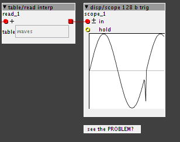
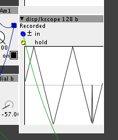
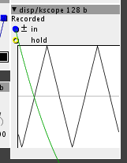

...puh...
you're right,that solves it!
going to create some more shaping-modules now,
I'm looking for some way to create tables from within the UI...
Wavetables.....Again..... How do I playback only 1 cycle of a wavetable?
rbrt
#81
jaffasplaffa
#82
Hey @rbrt
If you check the community library I have contributed with a wavetable patch, where you can create wavetables in Axoloti and save them to sd-card You can vreate wavetables of 128 waves of 2048 samples.... The one uploaded could use and update, but it works pretty well. I am also experimenting with one that creates lfo "wavetables". SO I can load them in a table.
You mostly need the 3 objects on the right, the carrier, the saver and the player.. The rest you can remove and make something new... But those 3 objects creates and save wavetables to sd-card.
rbrt
#83
I just stumbled upon a rather basic problem with ' table/read interp ' when trying to read from
a table containing 2 waveforms.
unfortunately,it appears your approach here :
https://sebiik.github.io/community.axoloti.com.backup/t/wavetables-again-how-do-i-playback-only-1-cycle-of-a-wavetable/579/9?u=rbrt
seems to be buggy because ' table/read interp ' is not 'wrapping around' the way it should
this may not be noticable with long tables ( 512 + samples) , but with 32 sample - tables,this is what happens:

here's a patch with some steps to reproduce:
table read interp PROBLEM.axp (9.1 KB)
I started digging in the code of table/read interp ,here's a simplification to point out what I'm up to:
y2 = attr_table.array[(index+1)];
...seems to be the line causing the problem,because it will read 'over the edge' of the segment,
because of [(index + 1)]
a solution could be :
if ((index+1) < end) y2 = attr_table.array[(index+1)]; else y2 = attr_table.array[(start)];
...of course in this example, table/read interp would need inlets/parameters to set the range inside the table to read from..
which leads me to a BIG QUESTION:
how to modify the code of table/read interp to interpolate directly from an index in samples??
I got pretty far with it,but I'm stuck at this line:
uint32_t asat = _USAT(inleta,27);
what do I have to do to adapt the code?
(I know it doesn't work as an independent object,because 'green integer' is K-rate.I want to use it inside my objects)
puh that was a long post...
thetechnobear
#84
That post was a long time ago 
I've since implemented wavetables as an object , so if I were to patch it again , I'd probably rethink the approach. I learnt a lot of flaws with the above whist doing that object.
Perhaps go check that object in the community library ?
rbrt
#85
checking...
but any idea how to interpolate with ' sample index input' instead of ' phase input' ?
thetechnobear
#86
sorry, not quite sure I follow you
ok, Im off out so dont have time to check your patch yet....so these are some random thoughts (for now), so may be crap 
as for interp, the code is
int32_t y2 = attr_table.array[(index+1)&attr_table.LENGTHMASK]<<attr_table.GAIN;by and'ing with length mask, this essentially will modulo it.
but I think possibly, as you mentioned, the incoming index is limited to 100%(64) , this kind of makes sense in when seeing this as a table (i.e. generically, rather than a wave cycle) , viewing the tables as a 'circular buffer' as you want for a wave is a 'special case'
all that said, I'm not sure this is your issue... as even if it didnt interp correctly, why would the value shoot down like this.. if the interp was wrong, Id just expect a 'step'
as you say, I possibly didn't notice this as I used higher res waves w/ more samples.
just one thing, and I could be wrong, your scope does remind me of issues I had when developing the wavetable object, but that was caused by something rather different, e.g. switching waves when not at the start of the wave... (you cannot move to a different wave, except at phase = 0 without glitching)
rbrt
#87
no hurry...would be cool if you check the patch when you find the time...
I think it displays the issue pretty well when you follow the steps...
...the 'issue' is most probably that 'table/read interp' doesn't modulo correctly when the object is supposed to acces a segmented table,since 'table/read interp' doesn't know about how many segments there are..
as far as I can follow your code, your 'wavetable play' - object does set the lengthmask correctly to the number of segments.
since the looper-objects I'm doing are based on storing independent loops in the same table,this is quite important for me since accessing them doesn't work correctly with 'vanilla' table/read interp
I'll try again from here now.
thetechnobear
#88
ok, had a quick check of your patch... and I think its as I explained..
a) read interp does not loop from point N to 0, it saturates.
which is reasonable for a general table read function, if you ask for 105% it gives you 100%
changing it to modulo the indexes and we get what is expected (I think)
uint32_t asat = inlet_a;
int index = asat>>(27-attr_table.LENGTHPOW);
int32_t y1 = attr_table.array[(index)&attr_table.LENGTHMASK]<<attr_table.GAIN;
int32_t y2 = attr_table.array[(index+1)&attr_table.LENGTHMASK]<<attr_table.GAIN;
int frac = (asat - (index<<(27-attr_table.LENGTHPOW)))<<(attr_table.LENGTHPOW+3);
int32_t rr;
rr = ___SMMUL(y1,(1<<30)-frac);
rr = ___SMMLA(y2,frac,rr);
outlet_o= rr<<2;b) your wave generator
to get nice waves you need to ensure you end up with continuous waves, you dont want discontinuities, simply shifting the phase in the table wont give you this... this is exactly the issue I had...
the way I got around this was a combination of moving between wavetables at a phase 0, and optionally crossfading...
suggestion, why not use/try my wavetable object, you it reads from a table, so you can still generates the waves, however you wish.
I another way that you could achieve the continuity, would be using windowing, but Im not sure this will give you the sound you expect when you shift thru a wavetable... though would be interesting to try.
jaffasplaffa
#89
Hey!
I am also working on a wavetable thingy for modulations sources as lfos and so on... And for that I use 64 sample size table for recording LFO shapes and at some point I had this problem too. And this was a phase issue. The 2 waveforms are not started at the same time. For example if you take the bipolar saw wave. That one does not start at phase zero, it starts at phase -180.... So you should in someway add a rst inlet for your rbrt/data/wave creator 32 object AND also a phase shift knob and offset the phase so it loos better.... Then connect the "copy" button to the rst inlet of the table creator and the rst inlet of the phasor you use for driving the table.... drjustice has got some phasors with rst inlet and phase
I think this will fix it.. It was one of the biggest issues I had with those wavetable patches I made... At the time I worked on them there were very few oscialltors with phase control and rst. So I waited long to before I could actually finish the creator patches.
rbrt
#90
hey @jaffasplaffa !
...sorry for the delay....
actually,my 'issue' was not really about creating continuous waveforms but about reading/playing them correctly,interpolated.
'wave creator' works ok for creating them...
the problem I was stumbling into is due to a misconception of mine of 'table/read interp' .
it works well with waveforms that fill an entire table,but with multiple waveforms in the same table,it doesn't.
The reason is that table/read interp needs to 'wrap around' to the start of the table when it reaches the end of the table to interpolate correctly, but the way table/read interp works is that it 'assumes' that it's reading one waveform (or 'loop') from one table.
@thetechnobear 's 'wavetable/play' does this nicely...
I haven't tried yet if it also does phase-shifting,but it should be easy to add...
I'll check whether it's possible to add this to 'wave creator' as well.
...also, I think I could add a feature to 'wave creator' to make the object display the contents of a table instead of just initializing them to sine or saw...
cheers,Robert
jaffasplaffa
#91
Yes true. But if the 2 waves does not allign, you will have this problem. .. And when you dont have a rst inlet for the wave creator, then when you push copy the 2 waves will be merged, but unalligned... Which will give you problems. IF yo have a rst function, the waves will automatically be alligned when copying them from the creator to the table.
I'll see if I can dig out an example from the last one i have been working in for LFO's, wheere I had the phase issue.. But I save many copies of each patch so I have to dig through old copies to find it.
But again.. not 100% sure if this is the problem you have,. But it was the worst problem that I had when making wavetable creator... And the problem was in the creator part not in the player/table part.
ANyway, I look forward to see what you come up with. I am addicted to wavetables ny now
jaffasplaffa
#92
Hey again
So here are 2 picture examples..... one of them is a single triangle with rst inlet connected but NO phase offset.... This one has the same issue as you have:

SECOND one has got rst inlet connected and ALSO phase offset.... No issues:

So it is not only the rst inlet it is also the phase offset.. In this case atleast. The picture are from after I push the create button on my patch
rbrt
#93
I think I solved the wrapping-with-multi-segment-tables-issue I had...
check this out:
solved.axp (27.7 KB)
will be in a community library nearby you soon.
smuff
#94
http://synthtech.com/waveedit/
This is a nice cross platform wavetable maker. Not sure if it fits with Axoloti. Would be nice to hear if anyone uses it.
Best S
Polyphonic morphable wavetable oscillator
Jens_Groh
#95
Since it's free, I thought I'd give "WaveEdit" a try.
Seems to work with Axoloti, using @thetechnobear's wavetable objects with the settings waves=64 and size=256.
Here is a simple example to play a wavetable from a file named "t1.raw" made with WaveEdit that you can upload to the patch's SDcard directory using Axoloti's File Manager.
t1_test.axp (4.6 KB)
In this patch, the controls "w_range" and "w_offset" mean how many of the waves are morphed and at which wave it starts, respectively.
WaveEdit stores the wavetable (called "Bank") in ".wav" format. You need to convert it to ".raw", which is pretty easy using Audacity and its export function. (export audio to / other... / RAW-headerless / signed-16bit-PCM)
lokki
#96
here are some wavetables, converted from the wave edit site:
raws.axp (79.7 KB) (rename to zip once downloaded)
simply open the wav files from the site in audacity and export to raw file. as @Jens_Groh wrote settings should be 64 and 256 in @thetechnobear loader.
lokki
#97
and here are all the 60 wavetables from the wave edit site. including the PPG wavetables. these are particularly nice, you scan through the whole wavetable and get a nice evolving sound. (the last 4 waves are always triangle, pulse at about 90%, pulse 50% and sawtooth. this is because the original PPG wave and also all the waldorf wavetable synths worked that way. you only had wavetable oscillators, so you had to set one of the wavetables to one of this classic waveforms if you wanted something similar to a "standard" synth sound. so simply attenuate by a *c 60 to omit the last four waves. the other wavetables are sometimes evolving ones, some are also single cycle collections. all use 256 points and are 64 waves in size. have fun and rename to zip! happy new year.
60wavetables.axp (1.4 MB)
Happy new year @lokki and @Jens_Groh,
I'm currently working on an extension of my antialiased PIWT oscillators to wavetables, thus this wavetables are a great source for my tests. Thanks

lokki
#100
and to update some more on the wavetable topic.
i had a look at serum, great wavetable creation tool, really!! i discovered that you can export all 256 waves in 8-bit and 256 samples wide to a .256 file. turns out this is just raw data. import to audacity, save as 16bit raw again, and voila good to go with @thetechnobear s objects. VERRY nice...